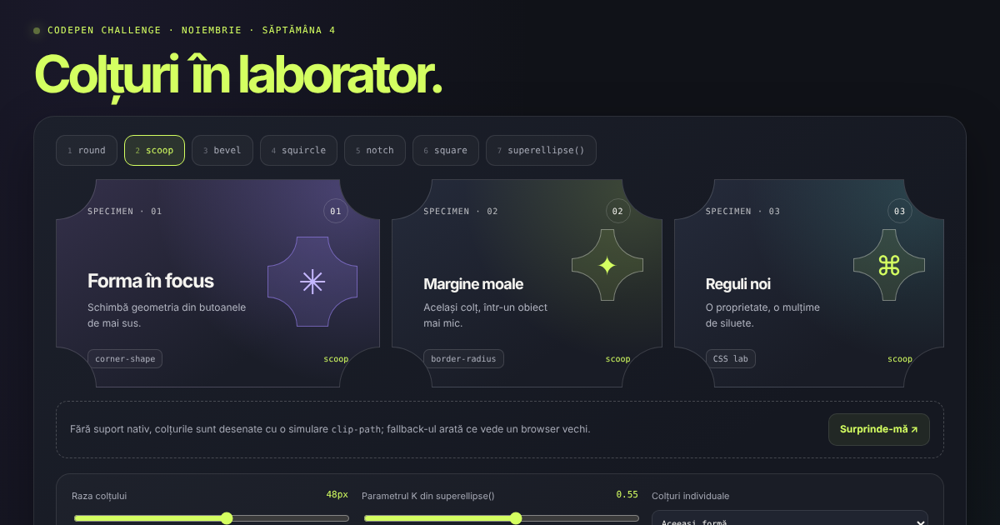

Studiu de caz · CodePen Challenge · noiembrie 2026Case study · CodePen Challenge · November 2026
Corner Lab
Cum am făcut o proprietate CSS pe care o înțelege doar Chrome să arate la fel în orice browser: o curbă superellipse calculată în JavaScript, tăiată cu clip-path și conturată cu SVG.How I made a CSS property only Chrome understands look the same in every browser: a superellipse curve computed in JavaScript, cut with clip-path and outlined with SVG.

ProvocareaThe challenge
Tema ultimei săptămâni din noiembrie a fost CSS experimental. Am ales corner-shape: alături de border-radius, schimbă profilul colțului din arc de cerc în scoop (concav), bevel (teșit), notch (crestătură), squircle sau orice superellipse().The last November week's theme was experimental CSS. I picked corner-shape: together with border-radius, it changes a corner's profile from a circular arc to scoop (concave), bevel, notch, squircle or any superellipse().
Problema s-a văzut abia după prima versiune. Proprietatea există doar în Chrome, așa că în Firefox și Safari toate cele șapte butoane produceau același colț rotunjit. Un playground despre forme care nu arată forme celor mai mulți vizitatori nu-și face treaba. Mai era și un mini-joc care nu verifica niciun răspuns.The problem only showed after the first version. The property exists only in Chrome, so in Firefox and Safari all seven buttons produced the same rounded corner. A shape playground that shows no shapes to most visitors isn't doing its job. There was also a mini-game that never checked an answer.
Ideea-cheie: o singură curbăThe key idea: one curve
Toate cuvintele-cheie sunt de fapt aceeași funcție, superellipse(K), cu valori diferite pentru K. Colțul e un sfert din curba |x|ⁿ + |y|ⁿ = 1, unde n = 2K:Every keyword is really the same function, superellipse(K), with different values of K. The corner is a quarter of the curve |x|ⁿ + |y|ⁿ = 1, where n = 2K:
K negativ înseamnă un colț concav, care intră în formă. K = 0 e o linie dreaptă, iar K pozitiv înseamnă convex. La −∞ curba se strânge într-un unghi drept spre interior (notch), la +∞ devine colțul pătrat.Negative K means a concave corner that cuts inward. K = 0 is a straight line, and positive K is convex. At −∞ the curve collapses into an inward right angle (notch), at +∞ it becomes the square corner.
- notch · scoop (K < 0)
- bevel (K = 0)
- round (K = 1)
- squircle · square (K > 1)
Simularea, pas cu pasThe simulation, step by step
1. Punctele colțului1. The corner points
Forma parametrică a curbei e simplă: pentru t de la 0 la 90°, un punct este (cos t)e, (sin t)e, cu e = 2 / n = 21−K. Calculez 24 de puncte pe colț, cele patru colțuri în sensul acelor de ceasornic, și le leg într-un singur drum SVG.The parametric form is simple: for t from 0 to 90°, a point is (cos t)e, (sin t)e, with e = 2 / n = 21−K. I compute 24 points per corner, the four corners clockwise, and join them into one SVG path.
// e = 2^(1−K): K = 1 → e = 1 (cerc), K = 0 → e = 2 (linie), K → −∞ → e → ∞
const e = Math.pow(2, 1 - k);
for (let i = 0; i <= steps; i++) {
const t = (i / steps) * Math.PI / 2;
const a = fpow(Math.cos(t), e), b = fpow(Math.sin(t), e);
pts.push([cx - r * a, cy - r * b]); // colțul stânga-sus
}Capcana a fost la infinit: în JavaScript, 1 ** Infinity dă NaN, iar cos(0) e exact 1. De aceea fpow tratează separat capetele intervalului (u ≥ 1 → 1, u ≤ 0 → 0, iar 0⁰ → 1 pentru square), ca notch și square să iasă din aceeași formulă, fără cazuri speciale.The trap was infinity: in JavaScript, 1 ** Infinity is NaN, and cos(0) is exactly 1. So fpow handles the ends of the range separately (u ≥ 1 → 1, u ≤ 0 → 0, and 0⁰ → 1 for square), letting notch and square come out of the same formula with no special cases.
2. Tăierea cu clip-path2. Cutting with clip-path
Drumul calculat devine clip-path: path('…'), suportat în Firefox și Safari de ani buni. Un detaliu contează aici: elementul trebuie să piardă border-radius cât timp e tăiat. Altfel, un squircle (care iese în afara arcului de cerc) ar avea goluri exact acolo unde fundalul rotunjit nu ajunge.The computed path becomes clip-path: path('…'), which Firefox and Safari have supported for years. One detail matters: the element has to drop its border-radius while it's clipped. Otherwise a squircle (which reaches outside the circular arc) would have gaps exactly where the rounded background doesn't reach.
.cs-sim { border-radius: 0 !important; }
@supports (corner-shape: round) { .cs { corner-shape: var(--cs); } }3. Bordura care lipsește3. The missing border
clip-path taie și bordura, așa că pe curbe dispare. Am pus în fiecare element un SVG cu același drum, culoarea și grosimea citite din stilul calculat. Linia SVG e centrată pe margine, iar jumătatea exterioară e tăiată de același clip-path, deci grosimea trebuie dublată ca să rămână vizibilă exact cât bordura originală.clip-path also cuts the border, so it vanishes along the curves. I added an SVG with the same path inside each element, with color and width read from the computed style. The SVG stroke is centered on the edge and its outer half is cut by the same clip-path, so the width has to be doubled to stay exactly as visible as the original border.
4. Mărime și forme în CSS4. Size and shapes in CSS
Fiecare element declară forma în variabila --cs și raza în --r, înregistrată cu @property ca lungime, ca scriptul să citească mereu pixeli. Așa simularea rămâne generică: aceeași funcție desenează cardurile, iconițele, rama foto și butoanele. Un ResizeObserver recalculează drumul când se schimbă mărimea.Each element declares its shape in a --cs variable and its radius in --r, registered with @property as a length so the script always reads pixels. That keeps the simulation generic: the same function draws the cards, icons, photo frame and buttons. A ResizeObserver recomputes the path when the size changes.
5. Verificarea5. Checking it
Fiindcă Chrome are și varianta nativă, am putut compara direct: aceeași formă, desenată o dată de browser și o dată de simulare, captură lângă captură. Pentru scoop, squircle și notch rezultatele se suprapun practic perfect. Comparația a rămas în pagină ca un comutator Nativ / Simulare JS / Fallback, ca să o poată face oricine.Since Chrome also has the native version, I could compare directly: the same shape, drawn once by the browser and once by the simulation, screenshot next to screenshot. For scoop, squircle and notch they overlap almost perfectly. The comparison stayed in the page as a Native / JS simulation / Fallback switch, so anyone can run it.
Ce mai conține paginaWhat else is on the page
- Spectrul superellipse: un slider de la −∞ la +∞ cu previzualizare SVG, care spune la fiecare pas de ce cuvânt-cheie e mai aproape forma și dacă e concavă sau convexă.Superellipse spectrum: a −∞ to +∞ slider with an SVG preview that tells you at every step which keyword the shape is closest to and whether it's concave or convex.
- Detectivul de colțuri: zece siluete, câte patru variante, puncte bonus pentru serie și record păstrat în browser. Siluetele sunt SVG, deci jocul merge la fel peste tot.Corner detective: ten silhouettes, four choices each, streak bonuses and a best score kept in the browser. The silhouettes are SVG, so the game works the same everywhere.
- Unelte: colțuri setate individual, CSS generat cu fallback-ul inclus și buton de copiere, un link care redeschide pagina cu aceeași formă, scurtături 1–7 și S.Tools: per-corner shapes, generated CSS with the fallback included and a copy button, a link that reopens the page with the same shape, shortcuts 1–7 and S.
- Muzeul CSS experimental:
if(),@function,color-mix()cu trei culori, Grid Lanes,:heading,::field-content, fiecare cu indicator de suport live.Experimental CSS museum:if(),@function, three-colorcolor-mix(), Grid Lanes,:heading,::field-content, each with a live support indicator.
Decizii de accesibilitateAccessibility decisions
- Toate controalele sunt butoane reale, cu
aria-pressedpentru starea selectată. Contururile SVG suntaria-hidden, fiind pur decorative.Every control is a real button witharia-pressedfor its selected state. The SVG outlines arearia-hidden, being purely decorative. - Schimbările importante (forma aleasă, răspunsul din joc) se anunță printr-o zonă
role="status", nu prin reanunțarea întregii grile de carduri.Important changes (the chosen shape, the game answer) are announced through arole="status"region rather than re-reading the whole card grid. - La colțurile concave, padding-ul cardurilor crește odată cu adâncimea tăieturii, ca textul să nu ajungă niciodată în zona decupată.With concave corners, the cards' padding grows with the depth of the cut, so text never lands in the cut-away area.
- Tema deschisă are culori proprii de accent, verificate pentru contrast pe text mic. RO/EN, temă și limbă păstrate,
prefers-reduced-motionrespectat.The light theme has its own accent colors, checked for contrast on small text. RO/EN, theme and language remembered,prefers-reduced-motionrespected.
Compatibilitate și verificareCompatibility & testing
- Teste automate în Chromium la 1366 și 390 px, cu emulare iPhone 13 și Pixel 7: fără erori JavaScript, fără derulare laterală, jocul jucat cap-coadă cu tastatura și prin atingere.Automated tests in Chromium at 1366 and 390 px, with iPhone 13 and Pixel 7 emulation: no JavaScript errors, no sideways scrolling, the game played start to finish by keyboard and by touch.
- Un browser fără suport l-am imitat ascunzând
corner-shapedeCSS.supports(): pagina pornește în modul simulare și desenează toate cele 17 elemente cu forme.I imitated an unsupported browser by hidingcorner-shapefromCSS.supports(): the page starts in simulation mode and draws all 17 shaped elements. - Rămân de verificat: Firefox și Safari reale, telefon fizic și cititor de ecran. Sunt pe lista de verificări manuale.Still to check: real Firefox and Safari, a physical phone and a screen reader. They're on the manual checks list.
IstoricHistory
- 1.0.0 — playground
corner-shapecu reglaje, componente, poster și muzeul CSS experimental.1.0.0 —corner-shapeplayground with controls, components, a poster and the experimental CSS museum. - 1.1.0 — simularea pentru orice browser, spectrul superellipse, jocul real, CSS copiabil și link partajabil; reparate textele RO/EN, selectoarele per colț, contrastul în tema deschisă și linkurile din footer.1.1.0 — the any-browser simulation, the superellipse spectrum, a real game, copyable CSS and shareable links; fixed RO/EN text, per-corner selects, light-theme contrast and footer links.
TehnologiiTech
Ce am învățatWhat I learned
Un fallback nu trebuie să fie neapărat o versiune mai săracă. Când am înțeles că toate formele sunt aceeași curbă, simularea a încăput în câteva zeci de rânduri. Și: un browser care are deja funcția nativă e cel mai bun etalon pentru a testa o imitație a ei.A fallback doesn't have to be a poorer version. Once I understood that every shape is the same curve, the simulation fit in a few dozen lines. And a browser that already has the native feature is the best yardstick for testing an imitation of it.